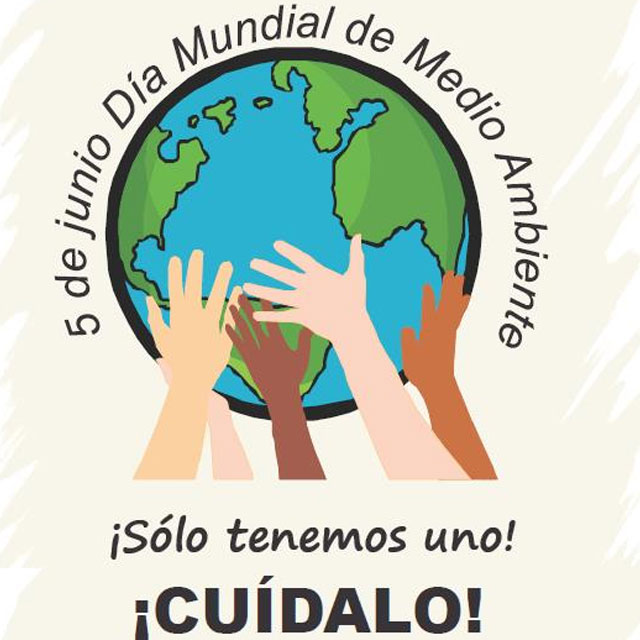
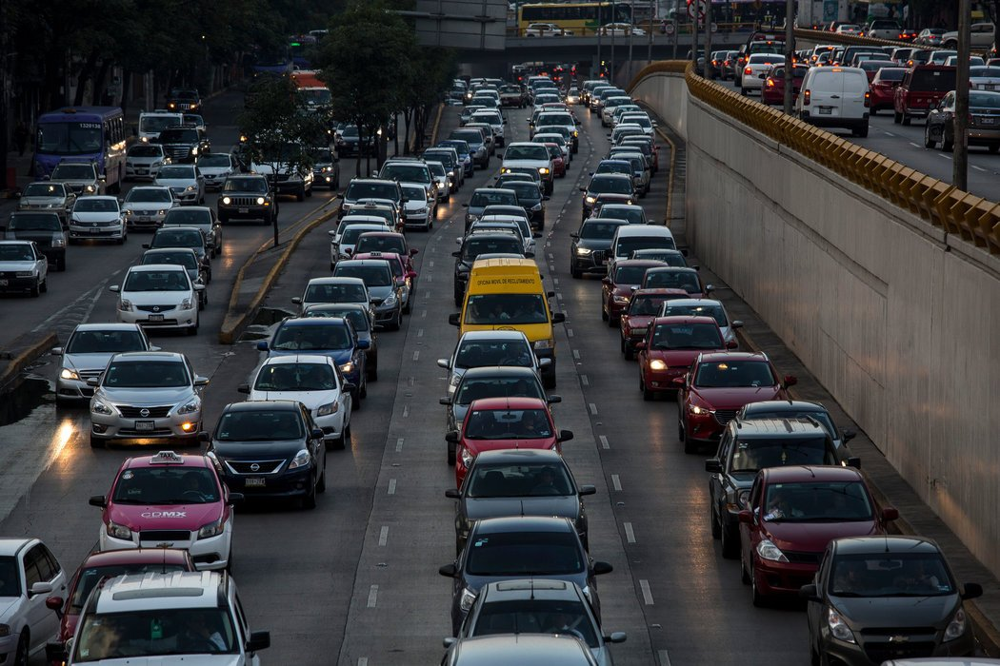
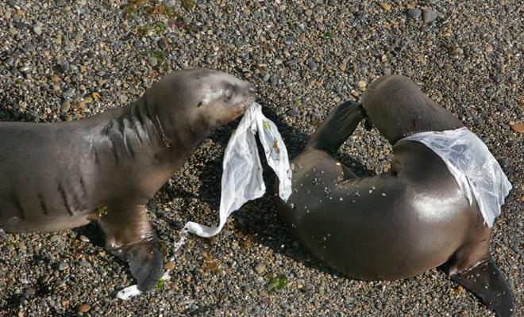
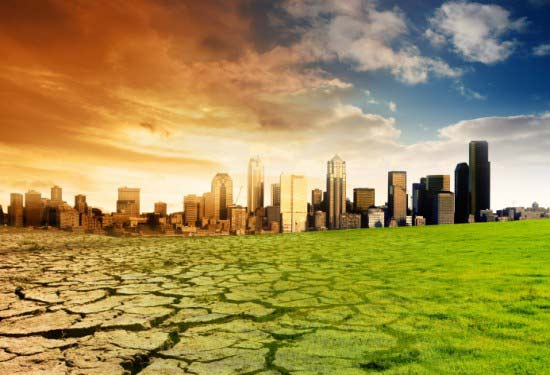
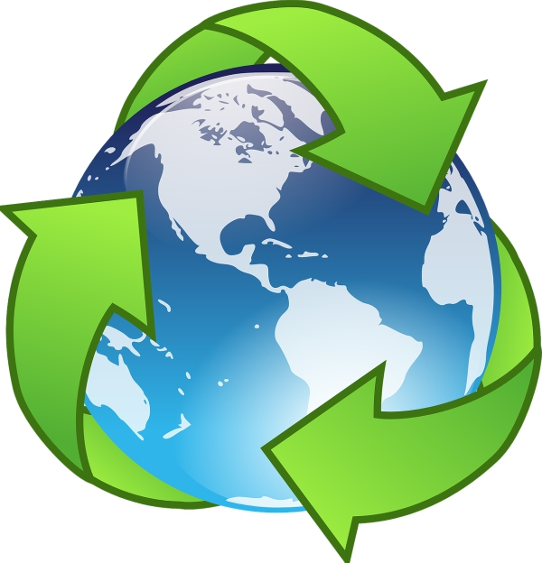
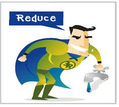
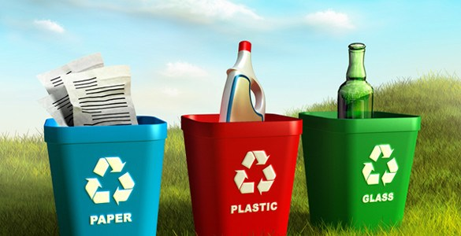

CONTAMINACIÓN AMBIENTAL
Banner conmemorativo del día mundial del medio ambiente:
Esta es el banner conmemorativo:

Esta es el banner conmemorativo:
La contaminación es la introducción de sustancias u otros elementos físicos en un medio que provocan que éste sea inseguro o no apto para su uso. El medio puede ser un ecosistema, un medio físico o un ser vivo, entendemos contaminación como el hecho de introducir en el medio ambiente cualquier tipo de elemento que realice un daño Es siempre una alteración negativa del estado natural del medio, y por lo general, se genera como consecuencia de la actividad humana considerándose una forma de impacto ambiental. Existen muchos agentes contaminantes entre ellos las sustancias químicas (como plaguicidas, cianuro, herbicidas y otros.), los residuos urbanos, el petróleo, o las radiaciones ionizantes. Todos estos pueden producir enfermedades, daños en los ecosistemas o el medioambiente.
A la hora de clasificar la contaminación podemos tener en cuenta diferentes criterios. Sin embargo, por norma general se emplea como principal manera de clasificar los tipos de contaminación la observación del elemento contaminante o del que resulta contaminado. En este sentido disponemos de los siguientes tipos de contaminación.
La más conocida, es el tipo de contaminación que surge de la liberación de partículas de sustancias químicas a la atmósfera. También conocida como polución, es el tipo de contaminación que afecta a través del aire. Uno de los contaminantes más conocidos en este sentido son el CO2, el metano y el humo proveniente de la combustión.
Se trata del efecto de la emisión y liberación en las aguas de sustancias contaminantes. Se dificulta o altera la vida y el uso normativo, haciéndola no potable. Habitualmente esta contaminación es de origen industrial. Incluye la contaminación marítima, la cual haría referencia a la contaminación de los mares y océanos por la misma causa.
Provocada por la filtración de sustancias en el suelo, genera alteraciones físicas y químicas en éste que hacen que por ejemplo resulte inhabitable, se contaminen las aguas subterráneas o se imposibilite el crecimiento de vida en el área.
Se trata de uno de los tipos de contaminación más peligrosos y agresivos con la vida. Es producida por la liberación de material radiactivo y tiene efecto en cualquier superficie. Suele derivarse de la acción humana, como el vertido de residuos o desastres en plantas de energía nuclear como el de Chernobyl.
Uno de los tipos de contaminación menos conocidos, es generado por el cambio de temperatura en el entorno o en diferentes medios debido a la actividad humana.
A pesar de que en principio el concepto pueda asemejarse al de la contaminación lumínica, en este caso se hace referencia a la alteración del medio en base a estímulos visuales que no tienen que ver con la luminosidad. Por ejemplo, se refiere a los cambios visuales que se producen en la naturaleza debido a la actividad humana.
Se trata de uno de los tipos de contaminación en la que el elemento contaminante es visual. la contaminación lumínica el elemento contaminante en sí es la emisión de luz fuera de lo que sería natural, provocando problemas como la pérdida de orientación o los cambios en los biorritmos tanto de seres humanos como de otros animales.
Denominamos contaminación acústica a la emisión de sonido en una proporción, frecuencia, tono, volumen y ritmo excesivos que provocan una alteración en el medio o en los seres que lo habitan. Este tipo de contaminación es el que viven, por ejemplo, aquellas personas que viven en barrios muy turísticos en los que hay multitud de discotecas y establecimientos con música.
Efectos en los seres vivos y el clima Infortunadamente, los efectos y consecuencias de la contaminación ambiental no son pocos, pues, además de provenir de una gran cantidad de fuentes ejercidas especialmente por el ser humano, los resultados se evidencian en las condiciones del clima, los animales y plantas y, claramente, su causante principal: el hombre.
Infortunadamente, los efectos y consecuencias de la contaminación ambiental no son pocos, pues, además de provenir de una gran cantidad de fuentes ejercidas especialmente por el ser humano, los resultados se evidencian en las condiciones del clima, los animales y plantas y, claramente, su causante principal: el hombre. Debido a la gravedad que han llegado los efectos y las consecuencias, hoy no hace falta ayudarnos de importantes máquinas para evidenciar los daños, sino que tristemente ya son evidentes a simple vista.
En la Unión Europea, por ejemplo, cerca de 20.000 personas mueren cada año a causa diferentes tipos de contaminación. Esto se debe, principalmente, a la emisión de gases contaminantes tóxicos en el ambiente, que causan irritación en los ojos y problemas en las vías respiratorias, además de fatigas, migradas y una serie de enfermedades cardiovasculares. ¿Cómo sucede esto? Pues bien, debido a la emisión, las partículas de humo y polvo que yacen en el aire ingresan al cuerpo y se alojan en los pulmones, donde empiezan a producir daños graves. Los principales afectados son los ancianos, los niños y personas que tienen problemas respiratorios, aunque es posible que las demás personas puedan resultar igualmente afectadas. En otros casos, personas que no tienen acceso a agua potable o cocinan con estufas de combustión de carbón o leña también podrían verse afectadas.
La presencia de CO2 en la atmósfera provoca la emisión de concentraciones excesivas que aumentan las posibilidades de aparición del efecto invernadero. Además de las alteraciones que provoca en el clima con los fenómenos meteorológicos, es también capaz de impedir la siembra en secciones del suelo donde residen agentes contaminados. En otros, la contaminación creada a partir de la deforestación, es uno de los principales causantes de la contaminación de los suelos.
En el caso de las plantas, las consecuencias de la contaminación ambiental pueden reflejarse en el crecimiento y la imposibilidad de adaptación a las condiciones del ambiente, debido a los efectos negativos que produce la contaminación en el aire y el agua, agentes esenciales para sus procesos naturales. Este hecho ha permitido la desaparición de algunas plantas. En cuanto a la fauna, es decir, los animales, debido a las alteraciones que ha sufrido el ambiente a causa de la contaminación ambiental, muchos han perdido sus fuentes de alimentos, además de la poca agua natural que existe por la contaminación a este agente. Esta acción provocada por el hombre, principalmente, ha llevado a que muchas especies entren a la larga lista de animales que se encuentran en peligro de extinción.

Es muy importante aprender a reciclar para así disminuir en todo lo posible los problemas de contaminación, por eso saber cómo reciclar es fundamental a la hora cuidar nuestro sistema y comunidad. Hay varias opciones de ayudar a contaminar menos, entre las principales usar energías alternativas que no sólo ayudará a cuidar el medio ambiente sino a nuestro propio bolsillo.
Cuando hablamos de reducir lo que estamos diciendo es que se debe tratar de reducir o simplificar el consumo de los productos directos, o sea, todo aquello que se compra y se consume, ya que esto tiene una relación directa con los desperdicios, a la vez que también la tiene con nuestro bolsillo. Por ejemplo, en vez de comprar 6 botellas pequeñas de una bebida, se puede conseguir una o dos grandes, teniendo el mismo producto pero menos envases sobre los que preocuparse.
Al decir reutilizar, nos estamos refiriendo a poder volver a utilizar las cosas y darles la mayor utilidad posible antes de que llegue la hora de deshacernos de ellas, dado que al disminuir el volumen de la basura.
Esta tarea suele ser la que menos atención recibe y es una de las mas importantes, que también ayuda mucho la economía en casa.
La ultima de las tareas es la de reciclar, que consiste en el proceso de someter los materiales a un proceso en el cual se puedan volver a utilizar, reduciendo de forma verdaderamente significativa la utilización de nuevos materiales, y con ello, mas basura en un futuro.
Reducir la contaminación produce ciertos beneficios a la salud, es lo que ha revelado un nuevo estudio que ha encontrado que el aire más limpio alarga la esperanza de vida en cinco meses.Algunas medidas pueden ser: